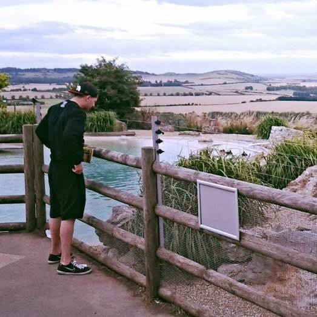

Hi there!
My name is Jhey Tompkins and I am a front end developer residing in the UK. I have a huge passion for all things front end and web. I love learning, problem solving and big challenges. I have worked with some great names such as Barclaycard, Bank of America Merrill Lynch and iDirect. I am an open source advocate with many repositories on github. I am also the creator of tyto and progre(c)ss. I graduated from UCL with a MSc in Financial Systems Engineering and from KCL with a BSc in Computer Science. Outside of development, I have many interests. I like to play sport, see friends and hit the gym. I also want to learn latin.
the web is my playground.
I love mexican food and I like to eat chicken. I am not a huge fan of hot drinks. But I will not turn down a Starbucks or Costa. I love the wolverine, an animal that many people are unaware of. I also take care of a Venus Fly Trap named Nigel. Please do not hesitate to contact me if you have a project you would like to talk about. Or maybe you would like to discuss an opportunity, or just want to chat about something.
Recent Thoughts
Projects
manage and organise things
pure CSS loading animation with minimal effort!
pure CSS progress bars with minimal effort!
alternative site navigation
get up and running with a backbone SPA in minutes